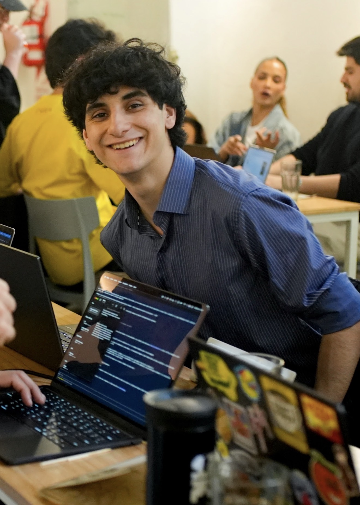

PARA CONFIRMAR MI LUGAR
Hasta el 9 de noviembre · 19:59 Argentina / 23:59 Múnich
De Argentina a hackaTUM.
Ya fui seleccionado. Me falta llegar.
Cualquier monto suma.
La colecta cubre parte del pasaje. Los demás gastos van por mi cuenta.
Quién soy+

Soy Marco Santino Amado.
Tengo 19 años y estoy terminando segundo año de Ingeniería en Inteligencia Artificial, becado en UdeSA. Egresé de un colegio público como abanderado nacional y con el mejor promedio de mi camada: 9,62.
Desarrollo proyectos con MAI, mi startup de desarrollo de software. Participo en hackathones y programación competitiva. Ahora fui seleccionado para competir en hackaTUM, organizada por la Universidad Técnica de Múnich, del 27 al 29 de noviembre de 2026.
Hablemos ↗Comunicación de aceptación oficial+
Correo de aceptación de hackaTUM 2026, recibido el 3 de noviembre.
Ver comunicación en PDF ↗Transcripción del correo original, sin enlaces personales de firma.